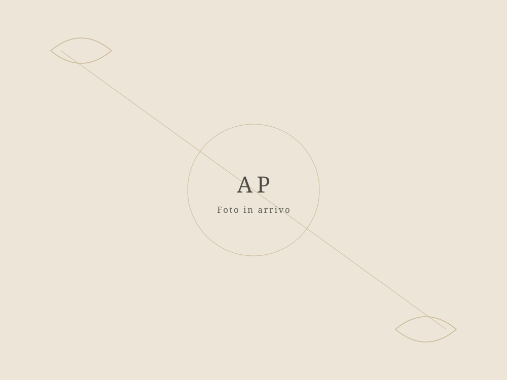

Ogni borsa è unica, fatta a mano, un pezzo alla volta.
Auri's Lab nasce a Torino dalla passione per l'uncinetto e per il lavoro fatto con calma, senza fretta. Non produciamo in serie: ogni borsa nasce da un gomitolo — per lo più lycra, a volte un misto cotone — e da ore di lavorazione manuale, punto dopo punto.
Il nome unisce l'idea di un ascolto attento — "auris", orecchio in latino — con quella di un piccolo laboratorio, un "lab" dove ogni pezzo viene pensato e realizzato singolarmente. È un lavoro lento per scelta: un tempo minimo di due settimane per ogni borsa, perché la cura non si comprime nel tempo.
Non tutte le borse restano disponibili a lungo. Quando un pezzo è pronto, resta in catalogo finché non trova la persona giusta — poi si passa al successivo, diverso dal precedente perché fatto a mano, e quindi mai identico.

"Una borsa fatta a mano porta il tempo di chi l'ha creata. Non è un difetto da nascondere: è il punto."
Artigianalità
Tecnica dell'uncinetto tramandata e affinata nel tempo, applicata a un prodotto pensato per l'uso quotidiano.
Lentezza
Niente produzione in serie né scorte infinite. Ogni pezzo richiede il suo tempo, e questo si vede nel risultato.
Unicità
Piccole variazioni di tensione del filo, di forma, di colore: sono la firma di un lavoro fatto a mano, non un errore.
Scopri le borse disponibili ora
Il catalogo cambia in base a cosa è pronto in un dato momento. Dai un'occhiata a cosa c'è adesso.
Vai al catalogo